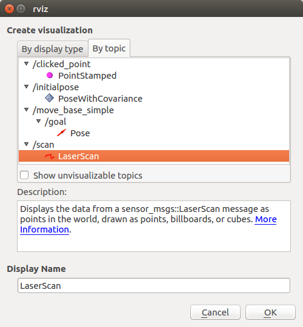
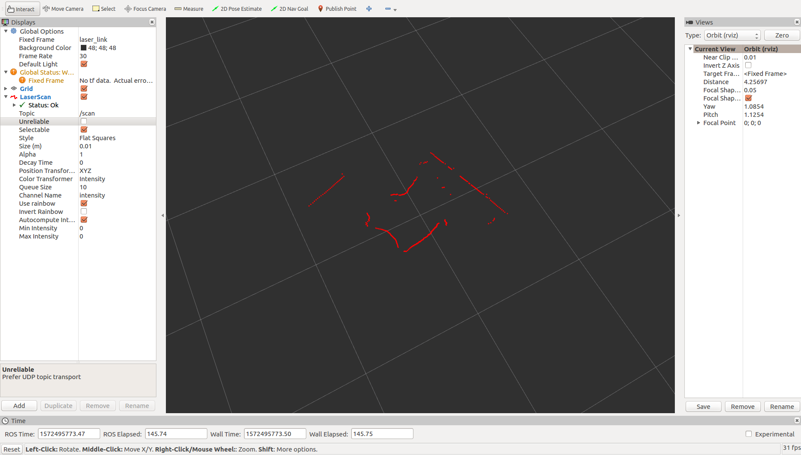

ROS install in Pynq:
- In terminal type
export ROS_OS_OVERRIDE=ubuntu:bionic. - In terminal type
sudo sh -c 'echo "deb http://packages.ros.org/ros/ubuntu bionic main" > /etc/apt/sources.list.d/ros-latest.list' - Continue to follow instructions from here starting from “1.3 Set up your keys”.
ROS install in Host:
Refer to ROS official website and download ROS according to your system.
Install laser driver for Leishen ls01d:
git clone https://github.com/leishen-lidar/LS01Dand copy the LS01D directory to your_workspace/src.- Compile the code:
catkin_make
Get laser data:
- After building the driver, in your workspace run
./devel/lib/talker/talkerand the laser data will be published in /scan topic. - You can use
ros echo /scanto read the data.
Show in your host using RViz:
- In the Pynq, run:
The URI and HOSTNAME should be yours.export ROS_MASTER_URI=http://192.168.5.108:11311 export ROS_HOSTNAME=192.168.5.108 - In your host, run:
The URI should be the same as Pynq and HOSTNAME should be yours. If your Pynq use some other URI rules, please add that toexport ROS_MASTER_URI=http://192.168.5.108:11311 export ROS_HOSTNAME=192.168.5.100/etc/hosts. - Start the laser publisher and in your Pynq, run
rviz -f laser_link. - In RViz, choose
Addbutton and add/scan.  - Now you can see the laser data in RViz. 